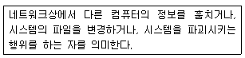

초음파비파괴검사기능사 (2007-04-01 기출문제)
1과목: 초음파탐상시험법
1. 자분탐상시험을 프로드법으로 적용할 때 자화 전류값은 무엇에 따라 결정되는가?
- 프로드 전극의 직경과 시험체의 두께
- 프로드 전극 사이의 거리와 시험체 두께
- 프로드의 재질과 프로드 전극 사이의 거리
- 시험체의 총 길이와 프로드 전극 사이의 거리
(정답률: 80%)

2. 비파괴 검사법 중 표면의 열린 결함 검출에 가장 효율이 높은 검사법은?
- 중성자 투과시험법
- 방사선 투과시험법
- 초음파 탐상시험법
- 침투 탐상시험법
(정답률: 알수없음)
3. 초음파탐상검사에서 초음파가 매질을 진행할 때 진폭이 작아지는 정도를 나타내는 감쇠계수(Attenuation coefficient)의 단위로 맞는 것은?
- dB/sec
- dB/℃
- dB/cm
- dB/m2
(정답률: 75%)
4. 초음파탐상시험시 진동자의 직경은 일정한데 주파수만 증가하면 음의 지향(분산)각은 어떻게 되는가?
- 변함없이 일정하다
- 감소한다
- 증가한다
- 감소하다가 증가한다
(정답률: 알수없음)
5. 다음 중 고체 뿐 아니라 기체나 액체 내에서도 진행할 수 있는 초음파는?
- 판파
- 램파
- 종파
- 횡파
(정답률: 알수없음)
6. 초음파가 두께 50mm 의 철강재를 통과하여 CRT 상에 지시가 나타날 때까지 걸리는 시간(μs)은? (단, 철강재의 종파속도는 5900m/s 이다.)
- 6.95
- 8.48
- 16.95
- 33.98
(정답률: 알수없음)
7. 다음중 정상적인 탐상에서 불연속 부분이 CRT 스크린 상에 지시의 형태로 나타나지 않는 경우가 발생하는 탐상법은?
- 수직법
- 표면파법
- 경사각법
- 투과법
(정답률: 70%)
8. 초음파탐상시험시 대역폭(band width)을 감소시키면 어떻게 되는가?
- 탐상장치의 감도가 증가된다.
- 탐상장치의 감도가 감소된다.
- 중심주파수가 높아진다.
- 중심주파수가 낮아진다.
(정답률: 72%)
9. 자연산 수정으로 탐촉자를 만들었을 때의 단점으로 옳은 것은?
- 큐리점이 낮아 고온에서 사용이 어렵다.
- 노화로 그 특성을 쉽게 잃는다.
- 초음파 송신효율이 낮다.
- 물에 잘 녹아 접촉매질로 물을 사용할 수 없다.
(정답률: 알수없음)
10. 다음 중 초음파의 수신효율이 가장 좋은 압전 물질은?
- 황산리튬
- 수정
- 산화은
- 티탄산바륨
(정답률: 67%)
11. 한 개의 탐촉자를 이용하여 입사된 초음파가 처음 매질로 반사되어 되돌아와 시험편의 한면만으로도 결함 탐상이 가능한 초음파탐상시험법을 무엇이라 하는가?
- 투과탐상법
- 전류관통법
- 펄스반사법
- 음향방출법
(정답률: 90%)
12. 초음파탐상기에서 시간축 발생기와 송신기에 펄스전압을 걸어주어 모든 회로의 작동을 조절하는 주요 회로를 무엇이라 하는가?
- 표시회로
- 수신회로
- 마커회로
- 동기작동회로
(정답률: 71%)
13. 두꺼운 판용접부의 경사각탐사에서 2개의 경사각 탐촉자를 용접부의 한쪽에서 전후로 배열하여 하나는 송신용, 하나는 수신용으로 하는 탐상방법은?
- 진자주사법
- 목돌림주사법
- 탠덤주사법
- 경사평행주사법
(정답률: 알수없음)
14. 경사각탐상에서 1회 반사법에서의 결함깊이(d)를 옳게 나타낸 식은? ( 단, d: 결함깊이, t: 검사물의 두께, W: 빔 노정, y: 탐촉자-결함간 표면거리, θ: 굴절각 )
- yㆍcosθ
- Wㆍcosθ
- 2t-Wㆍcosθ
- 2t-yㆍcosθ
(정답률: 31%)
15. 초음파탐상시험에서 직접 접촉법과 비교하여 수침법에 의한 탐상의 장점은 어느 것인가?
- 초음파의 산란현상이 커서 탐상이 좋다.
- 휴대하기가 편리하다.
- 저주파수가 사용되어 탐상에 유리하다.
- 표면 상태의 영향을 덜 받아 안정된 탐상이 가능하다.
(정답률: 84%)
16. 주조품에 대한 초음파탐상시험이 어려운 가장 큰 이유는 무엇인가?
- 큰 입자 구조이므로
- 결함 크기가 일정하므로
- 극히 미세한 입자이므로
- 결함 방향이 일정치 않으므로
(정답률: 알수없음)
17. 와전류탐상시험의 장점에 대한 설명이다. 틀린 것은?
- 두꺼운 재료의 내부검사에 적합하며 효율적이다.
- 비접촉법으로 시험속도가 빠르고 자동화가 가능하다.
- 결과의 기록보존이 가능하다.
- 고온, 고압의 조건에서도 탐상이 가능하다.
(정답률: 알수없음)
18. 방사선투과시험의 형광스크린에 대한 올바른 설명은?
- 주로 감사선을 이용할 때 사용한다.
- 경금속을 검사할 때 필름 감광속도를 느리게 하기위하여 사용한다.
- 주로 조사시간을 단축하기 위하여 사용한다.
- 조사시간을 길게 하며 납(Pb) 스크린보다 값이 훨씬 저렴해서 경제적이다.
(정답률: 55%)
19. 다음 중 매질 내의 음속을 결정하는 인자들로 구성된 것은?
- 주파수 및 탄성율
- 탄성율 및 밀도
- 매질 두게 및 밀도
- 조직입도(grain) 및 두께
(정답률: 46%)
20. 초음파탐상기에서 에코A를 20dB 올려 에코B 와 동일한 크기로 하였다. 에코A 와 에코B 의 높이 비는 얼마인가?
- 1:2
- 1:5
- 1:10
- 1:20
(정답률: 50%)
2과목: 초음파탐상관련규격
21. 초음파탐상기 기능 중 시간축에서 나타나는 전기적 잡음 신호를 제거하는데 사용되는 조절기는?
- 초점 조절기
- 리젝션 조절기
- 게이트조절기
- 시간축 이동 조절기
(정답률: 알수없음)
22. 초음파탐상시험 중 펄스 반사법에 의한 직접접촉법이 아닌 것은?
- 수침법
- 표면파법
- 경사각법
- 수직법
(정답률: 알수없음)
23. 다음 물질 중에서 음향 임피던스가 가장 높은 것은?
- 철
- 물
- 공기
- 알루미늄
(정답률: 48%)
24. 초음파탐상기의 화면 시간축 눈금이 10칸의 등간격으로 되어 있을 때 수직탐상으로 두께 60mm인 시험편의 제1회 저면 반사파가 5번째 눈금에 나타나도록 시간축을 보정하였다. 미지의 시험편 두께를 측정한 결과 제1회 저면 반사파가 시간축의 3번째 눈금에 나타났다면 이 시험편의 두께는 몇 mm인가? ( 단, 두 재료의 재질 및 시험방법은 모두 동일하다. )
- 12
- 24
- 36
- 48
(정답률: 알수없음)
25. 다음 중 방사선투과검사로 판별하기 가장 어려운 결함의 경우는?
- 결함의 크기
- 결함의 종류
- 결함의 깊이
- 결함의 수
(정답률: 알수없음)
26. 알루미늄 맞대기 용접부의 초음파 경사각탐상 시험방법(KS B 0897)에 의한 탐상장치의 사용 조건으로 올바른 것은?
- 증폭 직선성은 ± 5% 로 한다.
- 시간축의 직선성은 ± 2% 로 한다.
- 감도 여유값은 20dB 이하로 한다.
- 경사각 탐촉자의 공칭 주파수는 5MHz로 한다.
(정답률: 70%)
27. 강용접부의 초음파탐상 시험방법(KS B 0896)에서 경사각 탐상에 의한 에코높이 구분선 작성을 위하여 STB-A2 를 사용하는 경우 표준구멍의 크기로 맞는 것은?
- Φ1× 1mm
- Φ2× 2mm
- Φ4× 4mm
- Φ8× 8mm
(정답률: 알수없음)
28. 초음파탐상시험용 표준시험편(KS B 0831)에서 구상화 어닐링 열처리를 한 시험편은 어느 것인가?
- N1형 STB
- G형 STB
- A1형 STB
- A2형 STB
(정답률: 75%)
29. 초음파탐상시험용 표준시험편(KS B 0831)에서 G형 STB의 검정에 사용되는 탐촉자와 접촉매질에 대한 설명 중 틀린 것은?
- 수직탐촉자를 사용한다.
- 진동자 재료는 수정 또는 세라믹스이다.
- 진동자 치수는 10×10mm 이다.
- 접촉 매질은 기계유이다.
(정답률: 알수없음)
30. 건축용 강판 및 평강의 초음파탐상시험에 따른 등급분류와 판정기준(KS D 0040)에 대한 설명으로 잘못된 것은?
- 두께 13mm이하, 나비 180mm이하의 평강에 대하여 규정하고 있다.
- 탐상방식은 수직법에 따르는 펄스반사법으로 한다.
- 접촉매질은 원칙적으로 물을 사용한다.
- 수동 탐상기의 원거리 분해 성능은 대비시험편 RB-RA를 사용하여 측정한다.
(정답률: 62%)
31. 초음파탐상장치의 성능측정 방법(KS B ⑤34)에서 수직 탐상의 감도여유값을 측정하기 위한 사용 기재가 아닌 것은?
- 머신유를 접촉매질로 사용
- STB-G V15-5.6 시험편
- 경사각 탐촉자
- 수직 탐촉자(비집속인 것)
(정답률: 알수없음)
32. 강 용접부의 초음파탐상 시험방법(KS B 0896)에서 장치의 조정 및 점검을 위한 경사각탐상시 입사점의 측정은 어떤 시험편을 사용하는가?
- RB-A8 대비시험편
- A2형 표준시험편
- RB-A4 대비시험편
- A3형 표준시험편
(정답률: 알수없음)
33. 강 용접부의 초음파탐상 시험방법(KS B 0896)에서 탠덤탐상의 적용 판두께 범위로 맞는 것은?
- 10mm이상
- 12mm이상
- 15mm이상
- 20mm이상
(정답률: 알수없음)
34. 강 용접부의 초음파탐상 시험방법(KS B 0896)에서 경사각 탐상에 의한 에코높이 구분선 작성시 에코높이의 범위가 M선 초과 H선 이하는 영역구분시 어느 영역에 속하는가?
- Ⅰ
- Ⅱ
- Ⅲ
- Ⅳ
(정답률: 75%)
35. 강 용접부의 초음파탐상 시험방법(KS B 0896)에 따라 용접 후 열처리의 지정이 있는 경우 합·부의 판정을 위한 초음파탐상 시험의 실시 시기로 맞는 것은?
- 최종 열처리 직전
- 용접 후 수 시간 지난 열처리 직전
- 최종 열처리 후
- 용접 후 1차 열처리한 즉시
(정답률: 80%)
36. 초음파 펄스반사법에 의한 두께측정 방법(KS B ⑤36)에서 고온 측정물의 추께 측정시 규정하고 있는 고온 측정물이란 측정면의 온도가 몇 ℃ 이상인 것을 말하는가?
- 40
- 50
- 60
- 70
(정답률: 82%)
37. 탄소강 및 저합금강 단강품의 초음파탐상 시험방법(KS D 0248)에서 시험 조건 중 탐촉자의 주사속도는 얼마인가?
- 초당 150mm이하
- 초당 180mm이하
- 초당 200mm이하
- 초당 250mm이하
(정답률: 40%)
38. 초음파탐상시험용 표준시험편(KS B 0831)에 의한 A1형 표준 시험편의 주된 사용 목적만으로 열거된 것은?
- 수직 탐촉자 특성 측정, 탐상기의 종합 성능 측정
- 경사각 탐촉자의 입사점 및 굴절각 측정, 측정 범위의 조정, 에코높이 구분선 작성
- 경사각 탐촉자의 입사점 및 굴절각 측정, 측정 범위의 조정, 탐상 감도의 조정
- 측정범위의 조정, 탐상기의 종합 성능 측정
(정답률: 알수없음)
39. 초음파 탐촉자의 성능측정 방법(KS B ⑤35)에 따른 강재를 5Z20×20A70 의 탐촉자로 탐상하고자 한다. 강재 내로 전파 되는 초음파의 파장은 약 얼마인가? (단, 강재 내 종파속도 5900m/s, 횡파속도 3230m/s 이다.)
- 0.33mm
- 0.65mm
- 1.0mm
- 1.2mm
(정답률: 알수없음)
40. 강 용접부의 초음파탐상 시험방법(KS B 0896)에 규정된 페라이트계 강의 두께 하한치는 얼마인가?
- 6mm
- 8mm
- 10mm
- 12.5mm
(정답률: 40%)
3과목: 금속재료일반 및 용접일반
41. 다음 중 컴퓨터 운영체제의 종류가 아닌 것은?
- UNIX
- WiNDOWS
- LINUX
- ACCESS
(정답률: 37%)
42. OSI-7계층으로 옳지 않은 것은?
- 물리계층
- 응용계층
- 처리계층
- 네트워크계층
(정답률: 알수없음)
43. Windows 시스템에서 하드웨어 주변 장치를 설치할 때 사용자가 세부 사항을 설정할 필요 없이 운영체제가 자동으로 설정해 주는 기능은?
- OLE
- PnP
- OS/2
- RISC
(정답률: 10%)
44. 다음 도메인 이름 중에서 기관분류가 교육기관에 속하는 사이트를 나타낸 것은?
- http://www.univ.co.kr
- http://www.ccc.or.kr
- http://www.bbb.ac.kr
- http://www.hs.go.kr
(정답률: 알수없음)
45. 다음이 설명하고 있는 것은?

- Vaccine
- User
- Cracker
- Virus
(정답률: 43%)
46. 철(Fe)의 자기변태점은 약 몇 ℃ 인가?
- 358℃
- 423℃
- 768℃
- 1120℃
(정답률: 알수없음)
47. 현미경으로 조직시험을 하고자 할 때 시험재료와 부식제의 연결이 잘못된 것은?
- 철강 - 질산 알콜 용액
- 구리, 황동, 청동 - 질산 용액
- Ni과 그 합금 - 질산 용액
- Zn 합금 - 염산 용액
(정답률: 60%)
48. 다음 중 용융점이 가장 높은 금속은?
- Mn
- Pt
- Cr
- W
(정답률: 79%)
49. 실용되는 공업용 황동의 상태도에서 나타나는 상온 조직은?
- α단상
- β단상
- α 및 α+β상
- β 및 β+δ상
(정답률: 알수없음)
50. 다음 중 실루민의 주성분으로 옳은 것은?
- Al + Si
- Sn + Cu
- Ni + Mn
- Mg + Ag
(정답률: 90%)
51. 로크웰 경도시험(HRC)에서 원뿔 다이아몬드형 압입자를 사용할 때 기준하중(Kg)과 시험하중(Kg)은?
- 10, 150
- 10,50
- 5, 100
- 5,150
(정답률: 46%)
52. 공구용 합금강 재료로서 구비해야 할 조건으로 틀린 것은?
- 인성이 좋아야 한다.
- 내마멸성이 커야 한다.
- 연성이 커야 한다.
- 경도가 높아야 한다.
(정답률: 알수없음)
53. 강재에 대한 비금속 개재물 시험에서 A계로 분류되는 것은?
- 산화물
- 알루미나
- 질화물
- 황화물
(정답률: 24%)
54. 순철에서 910℃ 이하의 온도에서 나타나는 결정격자는?
- 저심사방격자
- 체심입방격자
- 면심입방격자
- 조밀육방격자
(정답률: 알수없음)
55. 다음 중 조미니 시험은 무엇을 알아보기 위한 것인가?
- 균열
- 연화능
- 경화능
- 인성
(정답률: 30%)
56. 다음 중 탄소강의 5대 원소가 아닌 것은?
- P
- S
- Na
- Si
(정답률: 알수없음)
57. 오스테나이트계 스테인리스강은 18-8강이라고도 한다. 이 때 18과 8은 어떤 합금 원소인가?
- 텅스텐, 망간
- 텅스텐, 코발트
- 크롬, 니켈
- 크롬, 몰리브덴
(정답률: 알수없음)
58. 정격 2차 전류 200A, 정격 사용률 40%의 아크 용접기로 150A의 용접전류를 사용하여 용접하는 경우 허용사용율은 약 %인가?
- 22.5
- 60
- 71
- 80
(정답률: 39%)
59. 액화탄산가스 용기의 도색으로 맞는 것은?
- 청색
- 녹색
- 회색
- 백색
(정답률: 알수없음)
60. 가스용접에서의 매니폴드(manifold) 설치시의 고려사항과 가장 관계가 없는 것은?
- 용기의 교환주기
- 순간 최대 사용량
- 필요한 가스용기의 수
- 용접 토치의 팁번호
(정답률: 알수없음)